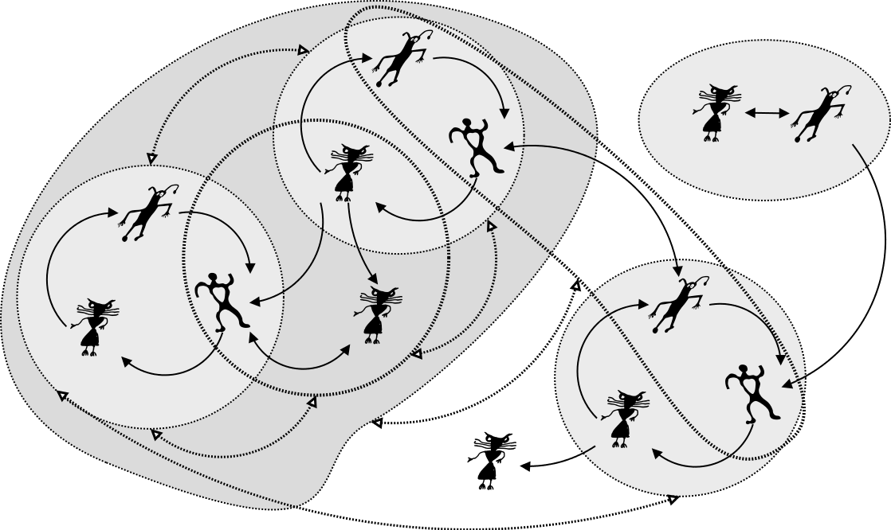
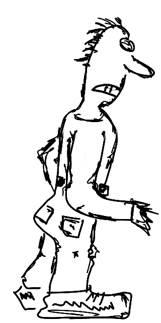

|
 |
Living Cognitive Society: |
||
The current situation |
Living Cognitive |
The [disruptive] impact |

"Unless you have been under a rock,
you know that the world is changing fast.1"
1 Forbes Apr 8, 2015 @ 3:29 PM: "21st Century Smart: Staying Relevant In The Artificial Intelligence Age"
Chaos versus Hierarchy? |
|
|  |  |
.. but we still think in terms of hierarchies.
Pragmatics-based perspective

Our
aspirations
1) Exploration, growth and development;
2) Stability and safety;

Our
"tendencies" and possibilies
1) Survival;
2) Abundance;
3) Dystopia...

Our
approaches to governance
3) Domination of individual states...
1) World government;
2) Distributed governance;
Foe? |
|
 |
|
Foe! |
|
|  | |


The Global Brain is A World of Views

Integration / coupling

Disintegration / decoupling

Integrated
focal scale